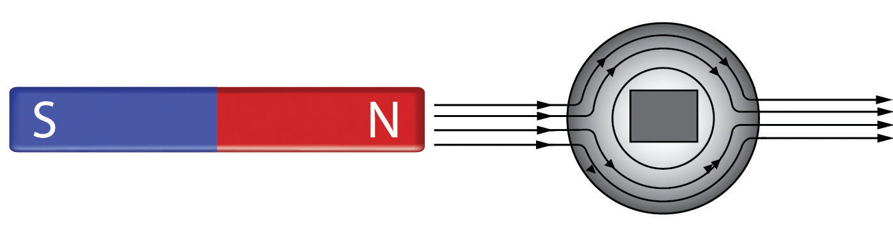
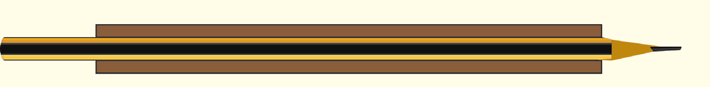
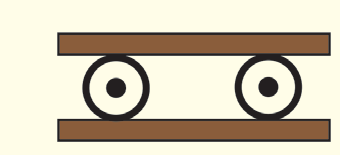
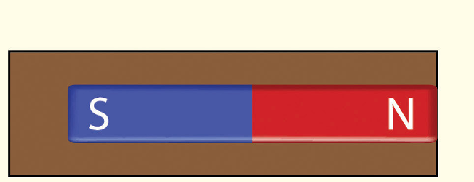
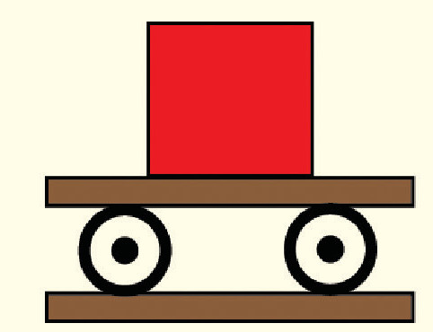

permeable. Suppose a region is to be shielded from magnetic effects; it could be enclosed with a ring made up of soft iron. The field lines could follow the iron ring around the shielded region as shown in Figure 3.38.

Field lines follow
The iron ring
Figure 3.38: Magnetic shielding redirects field lines

Activity 3.9
Aim: To demonstrate magnetic shielding
Materials: two pencils, bar magnets, index cards, sellotape, paper clips, drinking straws, iron nails
Procedure
1. Place two pencils on the sides of an index card.
2. Lay a second index card on top of the pencils as shown in Figure 3.39.

Side view

End view
Figure 3.39
3. Tape a strong bar magnet to the top index card as shown in 3.40.

Top view

End view
Figure 3.40
4. Use the assembly to pick up several small paper clips with the bottom card as shown in Figure 3.41.